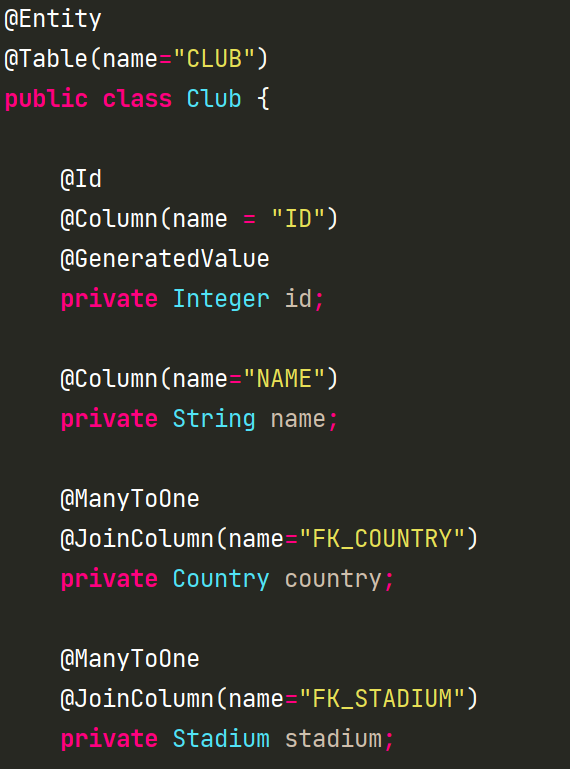
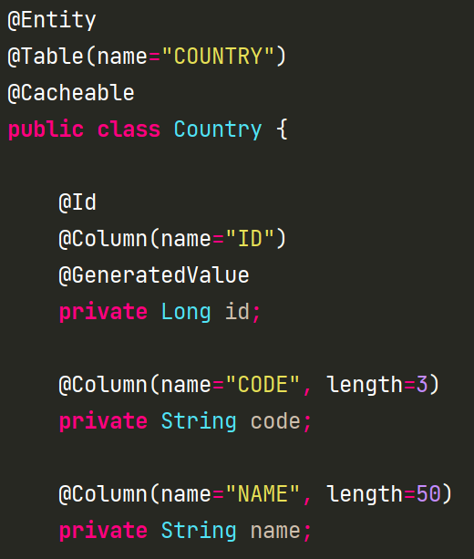
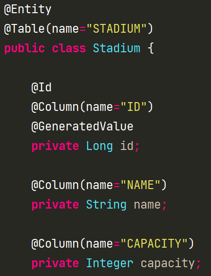

JPA Learning
Session #1 : select 1+N
Objectives
Better understand :
- EAGER vs LAZY
- Select 1+N
- Cache levels
- Fetching
Data Model

Club Entity
Country Entity
Stadium Entity
Github public project
Test Case 1
- Loads Clubs with id #1 and #2

Test Case 2
- Loads Clubs with id #1 and #2
- 2nd level of cache is enabled


Test Case 3
- Loads Clubs with id #1 and #2
- 2nd level of cache is enabled
- Join Fetch the stadiums


Conclusions
- EAGER loading without join fetch leads to select N+1
- Solving select N+1 leads to unreasonable joins
- Best strategy :
- @Cacheable entities as EAGER
- Everything else as Lazy
- Load the cache at the startup
- Else : Hibernate 5.4.11+ + EntityGraph / fetchgraph